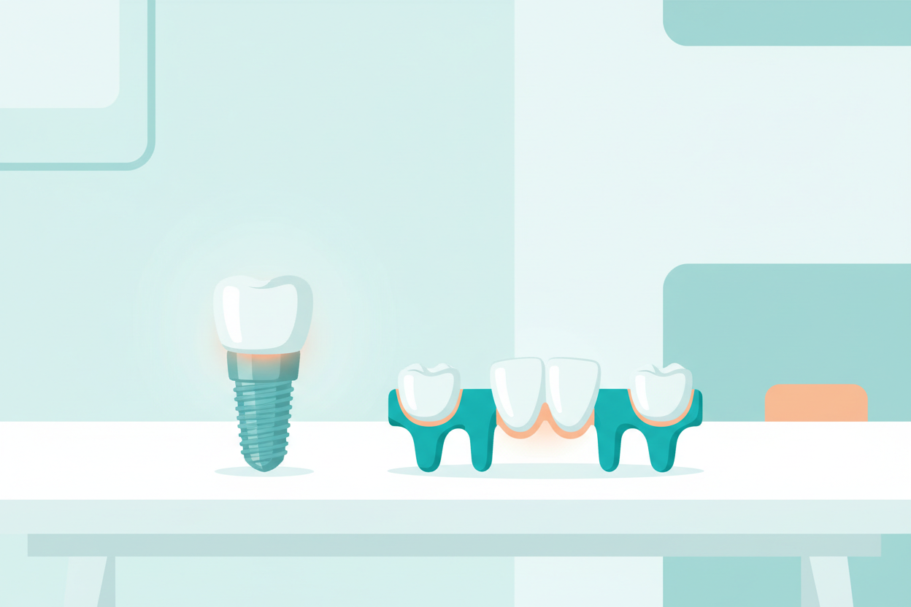

6 Oct 2026 · 5 min read · By Dr. Anish Bharti, M.D.S (Prosthodontics)
Lose a tooth as an adult and the decision that follows has a price tag, a timeline and a long-term consequence either way. The two standard fixes are a dental implant and a fixed bridge. Both fill the gap, both let you chew properly, and both look like a real tooth. The differences show up in what happens to the neighbouring teeth, in the jawbone underneath, and in what the next twenty years look like.
How each works
An implant replaces the root. A titanium post is placed into the jawbone where the tooth used to be, the bone grows onto it over a few months, and a crown is fixed on top. It stands on its own and asks nothing of the neighbouring teeth. A bridge borrows support: the teeth on either side of the gap are trimmed down and capped, and a joined set of crowns spans the space, with the false tooth suspended in the middle.
The long-term picture
Here is the part that decides most cases. When a tooth is lost, the jawbone under it stops getting the chewing stimulation it needs and shrinks over the years. An implant keeps that bone working, the way a natural root does. A bridge fills the gap above the gum line but does nothing for the bone below it, which continues to shrink slowly. After a decade or more, that shrinkage can leave a visible dip under a bridge.
The neighbouring teeth matter too. A bridge costs two healthy teeth their enamel, permanently, because they get ground down for crowns. If those teeth already have large fillings or crowns, that is barely a sacrifice and a bridge becomes the efficient answer. If they are perfectly intact, an implant preserves them untouched.
Cost in Kolkata
A single implant with the crown typically runs ₹25,000 to ₹50,000 depending on the implant system used and whether any bone grafting is needed. A three-unit bridge typically runs ₹15,000 to ₹30,000 depending on the material. So the bridge is cheaper on day one. Over a twenty-year span the comparison shifts, because a bridge has more components that can fail and often needs replacement once, while a well-placed implant usually outlasts that period entirely. Neither number is a quote; both are the range you should expect to hear quoted.
Who suits which
An implant suits a healthy adult with adequate bone, someone planning to keep the result for decades. It needs minor surgery and the patience to wait three to six months for the bone to integrate. A bridge suits someone who wants the gap closed in two or three visits with no surgery, someone whose adjacent teeth already need crowns anyway, or a patient whose jawbone or health profile makes implant surgery a poor option. Age itself is rarely the deciding factor; bone quality and general health are.
The right answer depends on an X-ray and a proper exam, and any clinic that quotes you before looking at either is guessing. If you are weighing this decision, book a consultation, get both options priced for your specific mouth in writing, and then decide with the full picture.
Living with a gap?
One consultation with an X-ray is enough to tell you whether an implant or a bridge suits your case, with costs in writing.